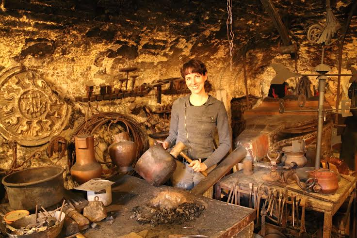

|
- IL DRAPPELLONE DEL PALIO DI SIENA DEL 2 LUGLIO 2017 -
|
|
  Nel drappellone per il prossimo Palio del 2 luglio il genius loci di Siena ha preso forma dalla cifra artistica di Laura Brocchi, capace di concretizzare la forza di una tradizione secolare e una parte importante della storia culturale della città in maniera originale e creativa. Le contrade, rappresentate a sbalzo, su mattonelline di rame ricoperto di argento ripropongono sì l’araldica contradaiola, ma con una sapiente e calibrata dose di inventiva. Disposte lungo il lato sinistro delineano con vigorosa luminosità la parte dipinta dove, sulla destra in alto, emerge la Madonna di Provenzano in onore della quale si corre la Carriera di luglio dedicata, quest’anno, al duecentesimo anniversario del Teatro dei Rozzi. Nel volto della Vergine è facile ritrovare i lineamenti dell’artista che per raffigurare la madre di Gesù, ha attinto dalla memoria del suo DNA, un omaggio alla mamma come appariva in uno dei giorni più belli della sua vita: il matrimonio. Nell’immagine è forte e bellissimo il richiamo all’effige miracolosa conservata nella Chiesa di Provenzano grazie ad un inserto, sempre in metallo lavorato, che si integra perfettamente con le linee stese con il pennello. Il velo azzurro prende la forma di un drappeggio. Come un sipario si apre sul primo attore della Carriera: il cavallo. Nella pupilla dell’animale il riflesso del giubilo. Una vera e propria miniatura dove racchiudere la gioia di un popolo. Un’opera, nel suo complesso, che nasce dal movimento di tanti elementi: metalli, colori, ricami, per un messaggio poetico che Laura Brocchi ha saputo creare sul drappo di seta con la sapienza e l’abilità di mani guidate da un cuore senese e contradaiolo. Abituata a battere e modellare il metallo, come prima di lei il nonno, il padre, lo zio e il fratello, si è ben cimentata con la tavolozza dei colori abbinando al cromatismo raffinato la brillantezza dell’argento con i suoi balenii vibranti di luce. E’ riuscita a organizzare, con giusto equilibrio due narrazioni, quella sul teatro, ben richiamata anche dal bassorilievo sempre realizzato a sbalzo, e quella sul Palio, che non si sviluppano soltanto attraverso la simbologia riportata, perché sarebbe una lettura superficiale e riduttiva. Ogni elemento inserito, ogni pigmento usato, ogni pennellata di oro, ogni forma delineata rappresenta un frammento di vita, di ricordi e di amore. La Madonna ha il volto di sua madre. Le maschere, che richiamano l’attività teatrale, sono inserti di stoffa cuciti dalle sue amiche. Gli stemmi, quelli del Comune e del Popolo sono stati realizzati con lo stile utilizzato da Cesare Olmastroni, una scelta dettata sempre dal cuore nei confronti del pittore recentemente scomparso. Amore e passione sono i sentimenti di oggettivazione del drappellone che oggi dona alla sua città.  |